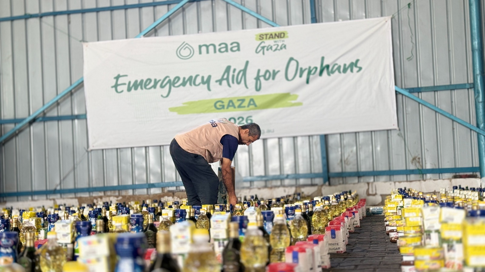
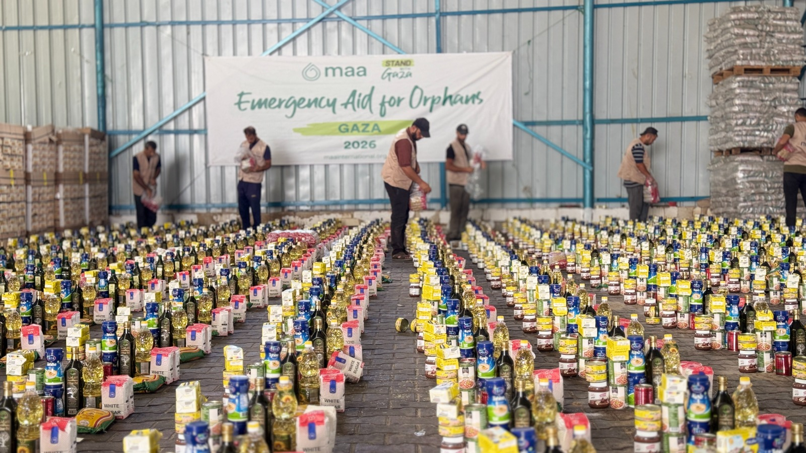
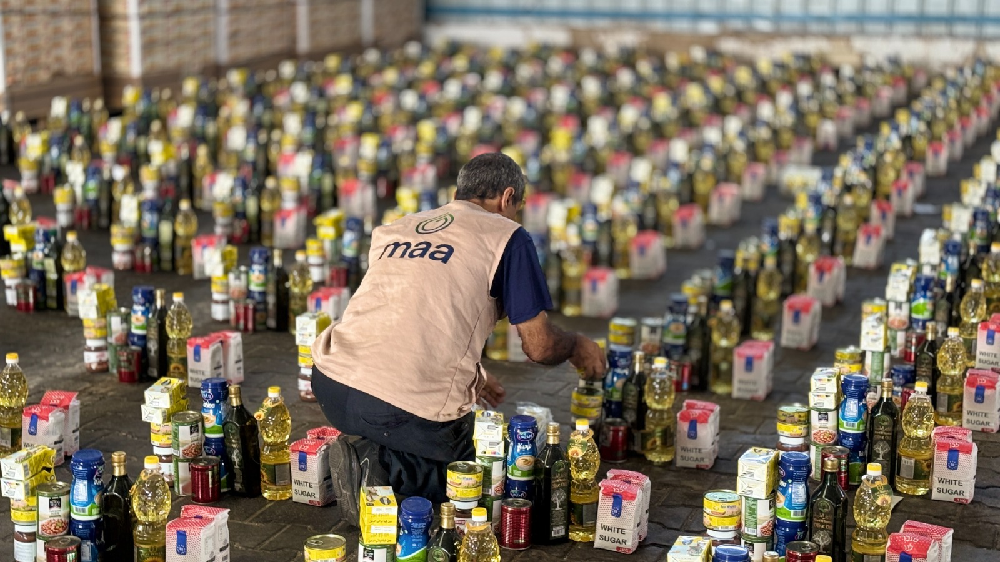
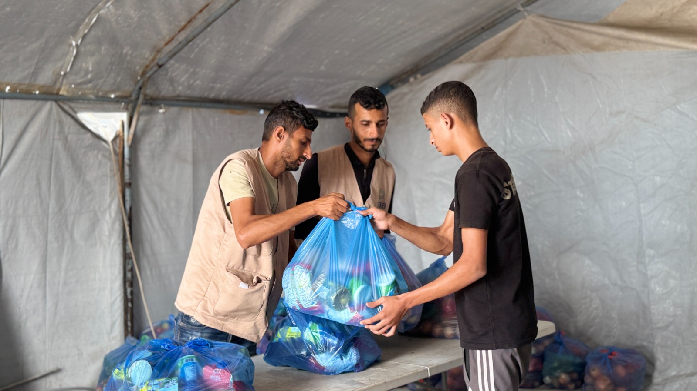
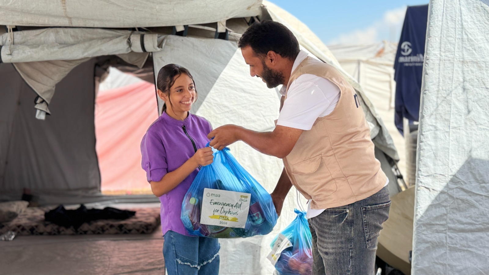
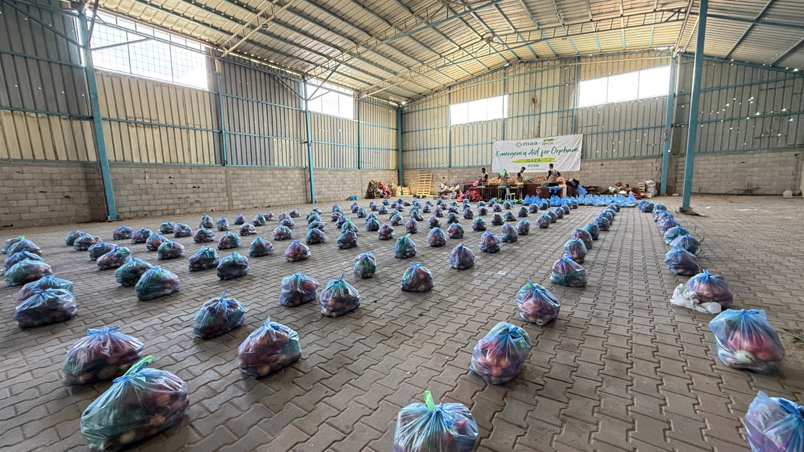

مشروع استجابة طارئة يستهدف 1,074 أسرة من الأسر اليتيمة والهشة في قطاع غزة، عبر ثلاث مراحل من المساعدات الغذائية المتكاملة.
يجمع المشروع بين الطرود الغذائية الجافة والسلال الغذائية الطازجة، مع تنفيذ المساعدة على ثلاث مراحل لضمان تنظيم التوزيع والوصول إلى الأسر المستهدفة.
تم تصميم التدخل ليجمع بين حجم الوصول، انتظام التوزيع، وتنوع المساعدة الغذائية.
توثيق مصور لأبرز محطات الاستجابة والتوزيع الميداني.





يتكون التدخل من طرد غذائي جاف وسلة غذائية طازجة، وفق تفاصيل المشروع.
12 صنفًا غذائيًا أساسيًا ضمن كل طرد.
سلة بوزن إجمالي 10 كغم من الخضروات والفواكه.
تم تقسيم المستفيدين إلى ثلاث دفعات متساوية، بواقع 358 أسرة في كل مرحلة.
الوصول إلى الدفعة الأولى من الأسر المستهدفة وتنفيذ التوزيع وفق آليات التحقق والمتابعة.
358 أسرةاستكمال الاستجابة للدفعة الثانية مع استمرار إجراءات الجودة والمساءلة.
358 أسرةاستكمال الوصول إلى الأسر المستهدفة وإغلاق دورة التوزيع والمتابعة والتوثيق.
358 أسرةتحديد الأسر المستهدفة والتحقق من أهليتها وبياناتها قبل التوزيع.
تجهيز المساعدات ومتابعة الجودة قبل إيصالها إلى الأسر.
تنفيذ ثلاث مراحل للوصول إلى 358 أسرة في كل مرحلة.
تفعيل آلية الشكاوى والتغذية الراجعة وتنفيذ PDM وإعداد التقارير.
يستهدف المشروع فئات محددة من الأسر اليتيمة والهشة وفق معايير المشروع.
الأسر التي ترأسها نساء/أرامل ولا يوجد فيها معيل أساسي، مع وجود أطفال أيتام.
الأطفال الذين فقدوا كلا الوالدين ويعيشون مع أقارب أو أوصياء أو بشكل مستقل.
الأسر ذات الدخل المعدوم أو غير المستقر، والاعتمادية المرتفعة، والصعوبات المرتبطة بالنزوح.
يتضمن المشروع آليات للمتابعة والتغذية الراجعة والتقييم بعد التوزيع والتوثيق والتقارير.
تم بناء دورة التنفيذ لتتجاوز عملية التوزيع نفسها، عبر جمع الملاحظات ومراقبة ما بعد التوزيع وإعداد التقارير اللازمة.
مشروع الاستجابة الطارئة للأيتام — طرود غذائية وسلال غذائية طازجة في قطاع غزة، بتنفيذ İHSAN VEFA DERNEĞİ وتمويل maa — Australia.